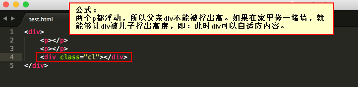

行内元素和块级元素
行内元素：span、a、b、i、u、em
块级元素：div、p、h系列、li、dt、dd
从HTML的角度来讲，标签分为：
文本级标签：p、span、a、b、i、u、em
容器级标签：div、h系列、li、dt、dd
行内元素和块级元素的相互转换
块级->行内： display: inline;
行内->块级： display: block;
元素脱离标准文档流：
一、浮动
用法：float: left;
浮动的清除（指的是清除浮动与浮动之间的影响）
方法1：给浮动元素的祖先元素加高度
方法2：clear:both;(不允许左侧和右侧有浮动对象)
方法3：隔墙法
两个div中间用一个新的div隔开，然后给这个新的div设置clear: both;属性；同时，既然这个新的div无法设置margin属性，我们可以给它设置height，以达到margin的效果内墙法：(一个父亲是不能被浮动的儿子撑出高度的)

方法4：overflow:hidden;
这个属性的意思是“溢出隐藏”1.IE 6不支持微型盒子:IE6不支持小于12px的盒子
IE6留了一个后门：只要给css属性之前，加上下划线，这个属性就是IE6的专有属性。_font-size: 0px;
2.IE6不支持用overflow:hidden;来清除浮动
overflow:hidden;的本意，就是让溢出盒子的border的内容隐藏，这个功能是IE6兼容的。不兼容的是overflow:hidden;清除浮动的时候。overflow:hidden;
_zoom:1;
二、绝对定位
定义横纵坐标。原点在父容器的左上角或左下角。横坐标用left表示，纵坐标用top或者bottom表示。
position: absolute; /*绝对定位*/
left: 10px; /*横坐标*/
top/bottom: 20px; /*纵坐标*/
绝对定位的盒子脱离了标准文档流。所有的标准文档流的性质，绝对定位之后都不遵守了。
绝对定位之后，标签就不区分所谓的行内元素、块级元素了，不需要display:block就可以设置宽、高了。
三、固定定位
相对定位让元素相对于自己原来的位置，进行位置调整（可用于盒子的位置微调）。
position: relative;/*相对定位：相对于自己原来的位置*/
left: 50px;/*left横坐标：正值表示向右偏移，负值表示向左偏移*/
top: 50px;/*top纵坐标：正值表示向下偏移，负值表示向上偏移*/
相对定位不脱标，老家留坑，别人不会把它的位置挤走。
用途：